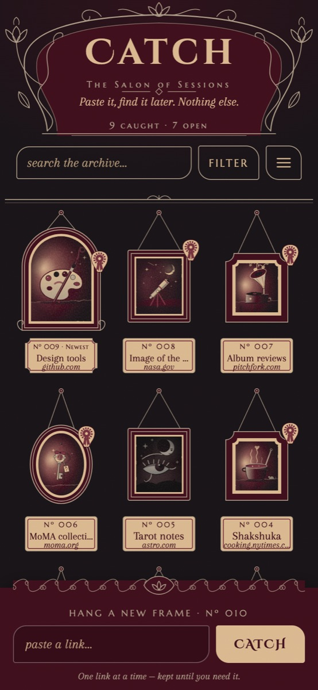
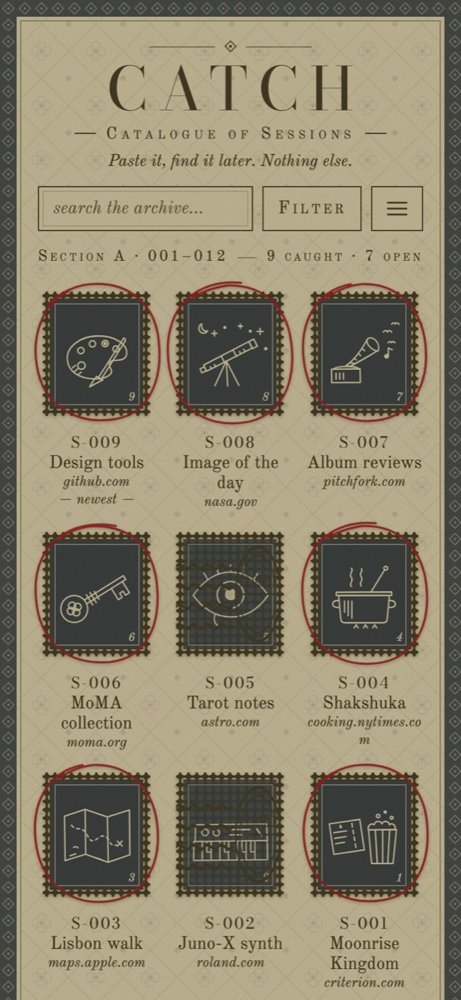

A personal archive of links
Paste it, find it later. Nothing else.
Catch is a private place to keep the links you want to come back to. Every link you catch gets a number and a little picture, and hangs in your own archive: as a painting on a salon wall, or a stamp in a catalogue. It works on your phone and your computer.


About five minutes, once.
Open quitekiwi.github.io/Catch in Safari. Other browsers can work too, but Safari is the surest way to add it to your home screen.
Tap the Share button , then Add to Home Screen. From now on, open Catch from the new icon. It opens full-screen, like an app.
Type your email and tap Send code. A 6-digit code arrives by email within a minute (check Spam the first time). Type it in, and you're in. Your archive is private to you.
In Catch, tap the menu ☰, then iPhone Shortcut, then Add to iPhone. Tap Install the Shortcut. When the Shortcuts app asks for your Catch key, tap the box, tap Paste, then Add Shortcut.
Now, in any app (Safari, Brave, YouTube, Instagram…), tap Share and choose Catch It. You'll see “Caught as Nº …” without leaving the app.
Pick “Name It” from the Shortcut's little menu to give a link your own name. “Quick Catch” uses the page's title.
Open quitekiwi.github.io/Catch in Chrome, tap the ⋮ menu, then Install app (or Add to Home screen). Open it and sign in with your email and the 6-digit code.
Once it's installed, Catch appears in Android's Share menu. In any app, tap Share and choose Catch. No Shortcut needed.
Open quitekiwi.github.io/Catch and sign in with the same email. It's the same archive everywhere.
In Catch, open the menu ☰ and drag the + Catch button up to your bookmarks bar. On any web page, click it to catch that page.
Catch opens offline and keeps anything you catch, rename or delete, then sends it when you're back online.
Menu → Shared folders → Share gives you a link to just that folder. Friends can look but not change anything, and Stop sharing turns the link off.
Only you can see your archive. When you catch a link without a name, a small helper visits that page once to read its title.
Run Add to iPhone again. Setting it up gives you a new key and switches the old one off, so set up all your devices at the same time.